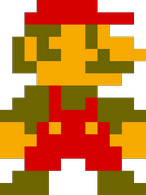
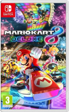
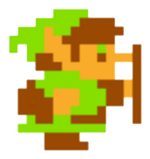
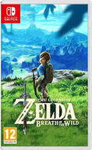
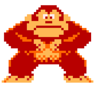
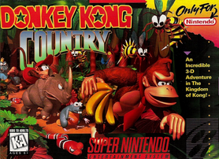
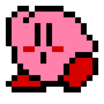
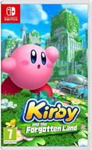

Nous allons voir 4 des principales mascottes de Nintendo™.Elles ont acompagné des générations de joueurs. Donc nous verrons leur premier jeu, le nombre de jeux sortis, le jeu le plus populaire de sa licence et sa jaquette.
| Mascotte | Premier jeu | Nombre de jeux sous la licence | Jeu le plus populaire (nombre de ventes) | Jaquette du jeu le plus populaire |
|---|---|---|---|---|
| Mario :  |
Jumpman sur la borne d'arcade « Donkey Kong » (1981) /Mario dans Mario Bros. sur NES (1983) | plus de 250 jeux (spin-off inclus) | Mario Kart 8 Deluxe avec 71 millions d'exemplaires(Switch, 2017) |  |
| Link. :  |
« The Legend of Zelda » (NES, 1986) | 21 jeux (spin-off inclus) | The Legend of Zelda: Breath of the Wild avec 33 millions d'exemplaires (Switch et Wii U, 2017) |  |
| Donkey Kong :  |
Borne d'arcade « Donkey Kong » (1981) | 25 à 30 jeux (spin-off inclus) | « Donkey Kong Country » avec 9,3 millions d'exemplaires(Super NES, 1994) |  |
| Kirby:  |
« Kirby's Dream Land » (Game Boy, 1992) | 37 jeux (spin-off inclus) | « Kirby et le monde oublié » avec 7,5 millions d'exemplaires (Switch, 2022) |  |
Les images des jaquettes sont tirées d'Amazon. les mascotes pixel eux sont tirée de diférents fandoms (cliquez sur le nom des mascottes)